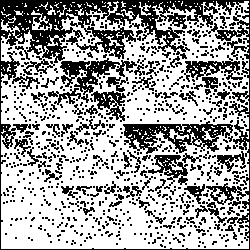
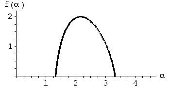

|  |  |
| Addresses 2 and 4 appear to have about the same number of points, fewer than those in address 1 and more than those in address 3. | |
| p3 > p2 = p4 > p1 | |
| Because r1 = r2 = r3 = r4, the minimum probability corresponds to the maximum α, and the maximum probability corresponds to the minimum α. | |
| Then | |
| The maximum probability occurs when just the transformation T3 is applied. This generates the point at corner 3, so the vicinity of this point fills in most densely, which we observe. Then f(αmin) is the dimension of the point at corner 3, that is, f(αmin) = 0. We see this on the left endpoint of the f(α) curve. | |
| The minimum probability occurs when the transformation T1 is applied.
This generates point at corner 1, so the vicinity of this corner fills in least densely, which we observe.
Then f(αmax) is the dimension of the point at corner 1, that is,
| |
| The four transformations T1, T2, T3, and T4 generate the filled-in unit square, a 2-dimensional shape. consequently max(f(α)) = 2. We see this as the highest point of the f(α) curve. | |
Return to visual interpretations of f(α) curves.